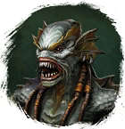

Открыть в интерактивной вики →
| Уровень | 35 |
|---|---|
| Сила (PvE) | 501 |
| Аспект арены | Velhar |
| Здоровье | 650 |
| Мана | 600 |
| Выносливость | 600 |
Статистика
 |  |  | |||
| Уровень: 25 | Уровень: 35 | Уровень: 45 | |||
Здоровье: 300 Мана: 600 Выносливость: 600 | Здоровье: 600 Мана: 600 Выносливость: 600 | Здоровье: 1200 Мана: 600 Выносливость: 600 |
Умения
| Фронтальный Удар Мощный Удар | Плевок |
Локация
Обломки корабля
Пляж
Иммунитеты / особые умения
-